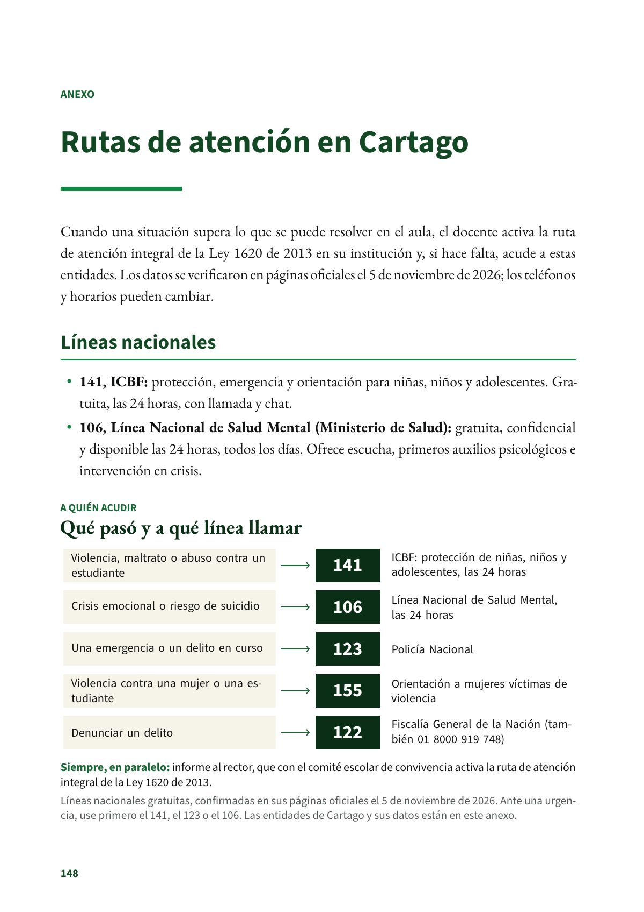
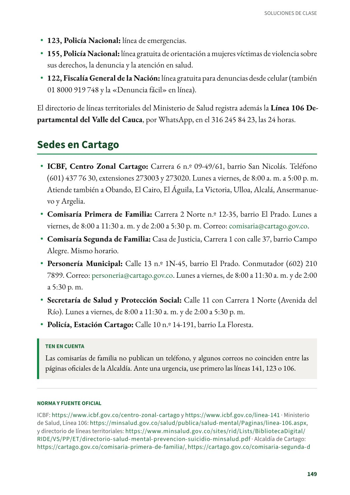
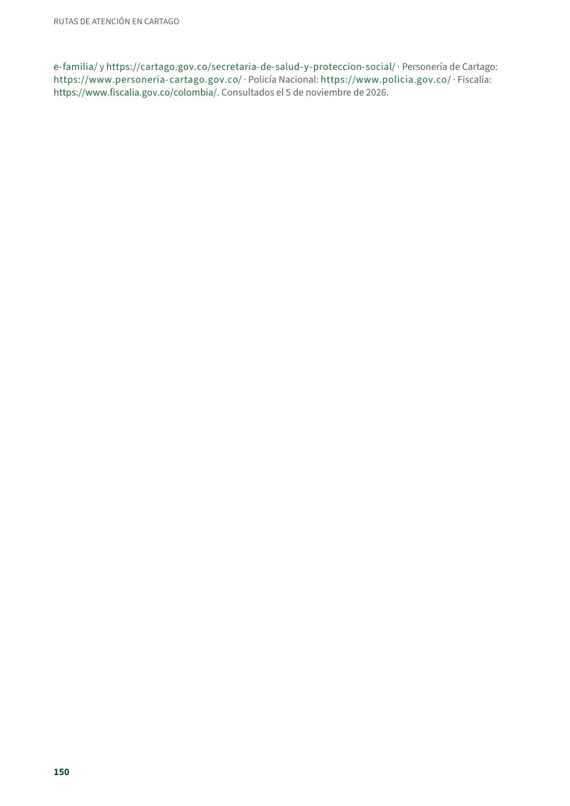

Rutas de atención en Cartago
Cuando una situación supera lo que se puede resolver en el aula, el docente activa la ruta de atención integral de la Ley 1620 de 2013 en su institución y, si hace falta, acude a estas entidades.
PDF · 3 págs. · 56 KBCuando una situación supera lo que se puede resolver en el aula, el docente activa la ruta de atención integral de la Ley 1620 de 2013 en su institución y, si hace falta, acude a estas entidades. Los datos se verificaron en páginas oficiales el 5 de noviembre de 2026; los teléfonos y horarios pueden cambiar.
Líneas nacionales
- 141, ICBF: protección, emergencia y orientación para niñas, niños y adolescentes. Gratuita, las 24 horas, con llamada y chat.
- 106, Línea Nacional de Salud Mental (Ministerio de Salud): gratuita, confidencial y disponible las 24 horas, todos los días. Ofrece escucha, primeros auxilios psicológicos e intervención en crisis.
- 123, Policía Nacional: línea de emergencias.
- 155, Policía Nacional: línea gratuita de orientación a mujeres víctimas de violencia sobre sus derechos, la denuncia y la atención en salud.
- 122, Fiscalía General de la Nación: línea gratuita para denuncias desde celular (también 01 8000 919 748 y la «Denuncia fácil» en línea).
El directorio de líneas territoriales del Ministerio de Salud registra además la Línea 106 Departamental del Valle del Cauca, por WhatsApp, en el 316 245 84 23, las 24 horas.
Sedes en Cartago
- ICBF, Centro Zonal Cartago: Carrera 6 n.º 09-49/61, barrio San Nicolás. Teléfono (601) 437 76 30, extensiones 273003 y 273020. Lunes a viernes, de 8:00 a. m. a 5:00 p. m. Atiende también a Obando, El Cairo, El Águila, La Victoria, Ulloa, Alcalá, Ansermanuevo y Argelia.
- Comisaría Primera de Familia: Carrera 2 Norte n.º 12-35, barrio El Prado. Lunes a viernes, de 8:00 a 11:30 a. m. y de 2:00 a 5:30 p. m. Correo: comisaria@cartago.gov.co.
- Comisaría Segunda de Familia: Casa de Justicia, Carrera 1 con calle 37, barrio Campo Alegre. Mismo horario.
- Personería Municipal: Calle 13 n.º 1N-45, barrio El Prado. Conmutador (602) 210 7899. Correo: personeria@cartago.gov.co. Lunes a viernes, de 8:00 a 11:30 a. m. y de 2:00 a 5:30 p. m.
- Secretaría de Salud y Protección Social: Calle 11 con Carrera 1 Norte (Avenida del Río). Lunes a viernes, de 8:00 a 11:30 a. m. y de 2:00 a 5:30 p. m.
- Policía, Estación Cartago: Calle 10 n.º 14-191, barrio La Floresta.
Ten en cuenta
Las comisarías de familia no publican un teléfono, y algunos correos no coinciden entre las páginas oficiales de la Alcaldía. Ante una urgencia, use primero las líneas 141, 123 o 106.
Norma y fuente oficial
ICBF: icbf.gov.co y icbf.gov.co · Ministerio de Salud, Línea 106: minsalud.gov.co, y directorio de líneas territoriales: minsalud.gov.co · Alcaldía de Cartago: cartago.gov.co, cartago.gov.co y cartago.gov.co · Personería de Cartago: personeria-cartago.gov.co · Policía Nacional: policia.gov.co · Fiscalía: fiscalia.gov.co. Consultados el 5 de noviembre de 2026.
Así se ve en el libro
3 páginas

